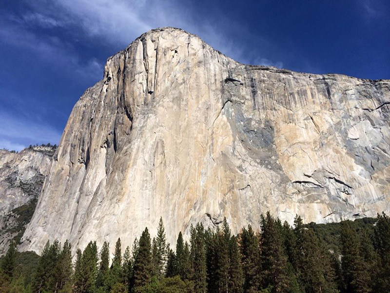

Alex Honnald

"It’s about being a warrior… This is your path and you will pursue it with excellence. You face your fear because your goal demands it."
Climbing
Alexander Honnold, born in Sacramento, California on the 17 August 1985, is a climber who specialises in 'big wall' climbing. He is most famous for being the first person to climb a route up El Capitan free solo (without protective gear and ropes); a feat captured in the video documentary Free Solo. Honnold has tackled a number of climbing challenges that simply boggle the normal persons mind.
Achievements include:
First person to free solo freerider, El Capitan

The imposing El Capitan, around 915 meters from base to summit
Alex climbed El Capitan with the aid of only a pair of La Sportiva TC Pro climbing shoes and a chalk bag. On May 3, 2017, he ascended the Freerider line in 3 hours and 56 minutes, beginning at 5:32 am and reaching the peak at 9:28 am.
Speed record in 2018 of The Nose, El Capitan with Tommy Caldwell, 1:58:07
Solo of Yosemite Triple Crown, Mt. Watkins, El Cap, Half Dome, in 18h 50m
Special Mention of Piolets d’Or for outstanding contribution in climbing, 2017
Golden Piton Award” for achievements in climbing, 2010
The imposing El Capitan, around 915 meters from base to summit
Alex climbed El Capitan with the aid of only a pair of La Sportiva TC Pro climbing shoes and a chalk bag. On May 3, 2017, he ascended the Freerider line in 3 hours and 56 minutes, beginning at 5:32 am and reaching the peak at 9:28 am.
The Honnold Foundation
"I live out of my van, which gives me a first-hand appreciation for power and lighting. A few years ago, I rebuilt the interior of my van to include solar panels and a battery that powers LEDs for lighting and allows me to charge my phone and laptop."
https://www.honnoldfoundation.org/
Life beyond
Alex is a keen vegetarian,